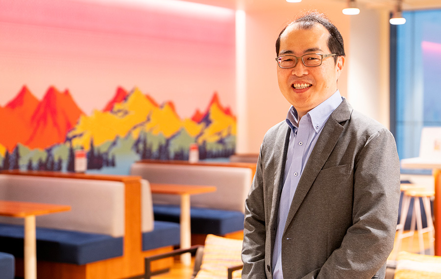
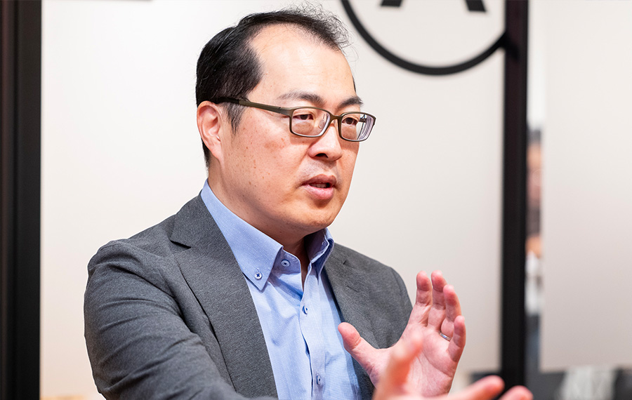
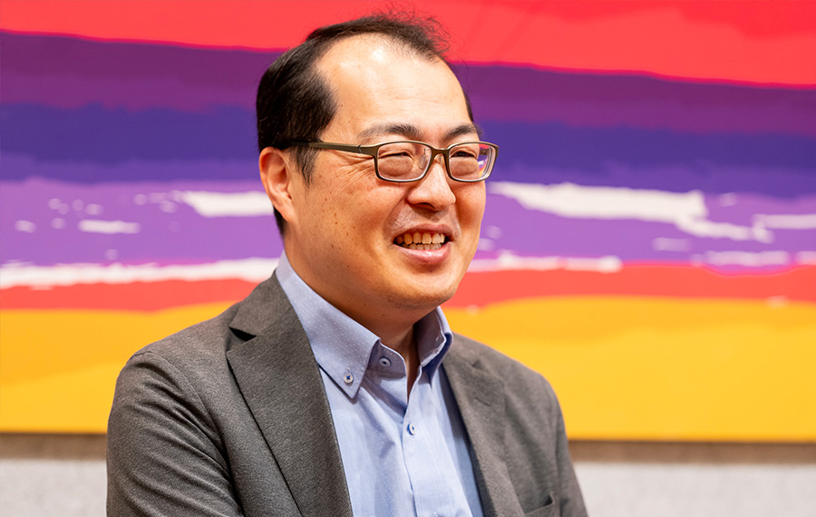
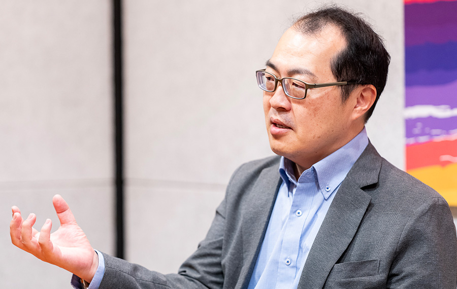
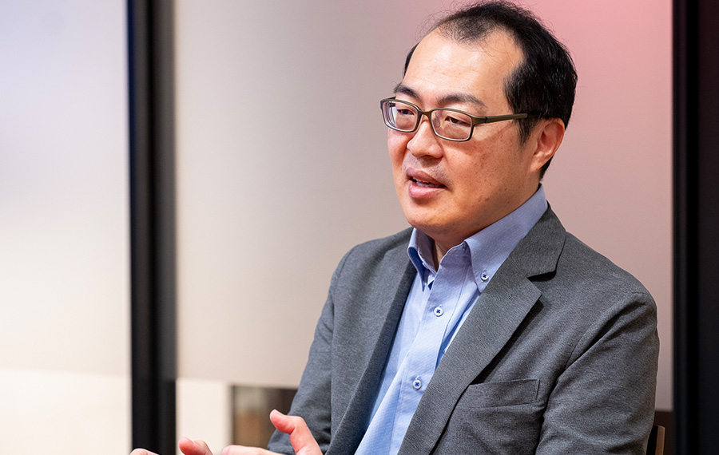

器用貧乏こそ我が武器。
学問の垣根を越えて人々の行動変容を支援する。

荒川 豊
九州大学大学院システム情報科学研究院・教授
2001年慶應義塾大学理工学部情報工学科卒業。2006年同大学大学院理工学研究科後期博士課程修了（博士（工学））。慶應義塾大学・助教、九州大学・助教、奈良先端大・准教授を経て、2019年より九州大学大学院システム情報科学研究院・教授。2022年より総長補佐（2024年まで）。途中、仏ENSEEIHT・独DFKI・米UCLAに留学。センサによる行動認識から行動変容を含む、人に寄り添う情報システムの研究に従事。2005年IPA未踏ユース・クリエータ。2023年科学技術分野の文部科学大臣表彰（科学技術賞）を受賞。
── 現在の研究内容を教えてください。
実世界からの「センシング技術」とクラウドでの「データ処理技術」、その間を結ぶ「ネットワーク技術」を組み合わせて、人に寄り添うシステムを作る研究をしています。私はこれを「ヒューマノフィリックシステム」と名付けて提唱しています。人（human）と、友好を意味する接尾語（philic）を組み合わせた造語で、「人と親和性の高い」、「人に優しい」という意味です。特に、センサ（IoT）と機械学習（AI）を用いた人の行動認識をメインテーマとしており、その実現のために新しいセンサの開発からアプリケーションの実装まで幅広く実施しています。スマホやAIが常時身近にある時代に、それらに内蔵されたセンサを活用し、人間を理解し、サポートするか。行動がわかれば、会議中なら着信を止める、未読メールを要約するといった、気の利いたソフトウェアを実現することができます。最近では、行動認識技術を土台としつつ、生成AI技術はもちろんのこと、心理学や行動経済学など他分野の知見を取り入れて、行動変容を支援する情報システムの研究を行っています。
── 行動変容というと具体的にはどのようなものですか。

もともと医学の世界で、生活習慣病を治療する手法として考えられたのが「行動変容の5ステージモデル」と言われるもので、認知行動療法等とともに広く活用されています。また、ノーベル経済学賞を受賞したNudge（ナッジ）も行動変容の手段として有名な手法です。私の場合、そうした行動の変化を最先端の情報技術で効果的に引き起こすことができるか、同時に、恣意的な仕掛けをどう回避するかといったアプローチで研究を進めています。福岡ドームでコンサートが終わった後、みんなが車で同じルートで帰ろうとすると渋滞しますが、みんなに異なる帰宅ルートを提示できたら分散できますよね。フェイクニュースも、それがフェイクニュースであるということをアラートできれば騙される人を減らすことができます。情報推薦システムの広がりにより、クリック＝ユーザの嗜好と考え、特定の情報ばかりが表示されるようにもなっています。この現象はフィルタバブルと言われますが、ユーザ自身がそういう状況であることを認知できるシステムの開発も行っています。近年、食事における栄養バランスのように、情報についても様々な情報を適度に摂取する「情報的健康」という概念が提唱されているのですが、私の研究はそれを実現する研究となります。
行動変容に関する研究は、「どのように情報を提示することで行動変容が起きるのか」を観察するような研究です。私自身は2014年くらいから取り組んでいますが、世間的にはコロナ禍で外出自粛や黙食など今までの行動を強制的に変えないといけない事態となり、広く用いられるようになった気がします。現在では、特定の行動の習慣化、ボランティアなどの利他的な行動の誘発、観光客の分散などなどさまざまな分野で情報技術を活用した行動変容の研究を進めています。
── 荒川さんは現職まで一貫してアカデミアにいらっしゃいますが、最初からそのようなキャリアを描いていたのですか。
いえ、まったく（笑）。大学時代は慶應のテニスサークルの代表ですよ、私。研究職などとんでもない。想像したこともありませんでした。大学1年生から3年生まで本当によく遊びましたし、成績も．．．。プログラミングの講義は特に苦手で留年しかけました。ただ、研究室のホームページを担当したり、自身の研究プログラムを書くうちに、プログラミングやサーバ構築の魅力にハマっていきました。そんな中、先輩に誘われて、立ち上げたばかりの会社でプログラマーとして働くようになりました。これが面白く、結構稼げていたので、就職活動すらせずそのまま博士課程に進みました。機材は何でも買ってもらえましたし、社員旅行でハワイに行ったり温泉にいったり、良い思い出しかありません。博士進学といっても、学生期間を3年伸ばすことが目的だったので、先生には「学位は不要です」といって、まったく研究はしていませんでした（笑）。
── 異色ですね！
博士2年生のときに、新しくできた研究室に移籍しました。指導教授である山中先生はベンチャー志向が強く、私の活動も多少認めていただきつつ、いつもアドバイスをくれていました。特に、「これからはコア技術を持たないとすぐ負ける。小手先の技術では長続きしないぞ」と何度も忠告をしてくれました。コア技術があっても潰れていくベンチャーも目の当たりにして、10年先を見据えた技術開発の重要性を感じました。ちょうどその頃に、IPA未踏のことを知って、会社の仕事ではなく、自分のアイデアで稼いでみるのも面白いなと思って応募しました。テーマは当時流行っていたブログの閲覧数を増やすために、同一ニュースに対するブログを集約するシステムというものでした。

未踏と並行して、学位取得に向けた研究と論文執筆も行ったため、未踏がやや中途半端になってしまったのが心残りでしたが、その後「福岡未踏」で、九州地区で若手クリエータの発掘と育成を行うという充実した活動につながっています。
学位取得後は、週4研究室勤務としてもらい、残りは起業に向けたソフトウェア開発という生活を送っていました。研究室では、学生の論文添削や特許申請、デモアプリ開発を担当しつつ、売れるようなソフトウェアを考える日々でした。実は、未踏には2つの提案を出していたのですが、採択されなかった方の提案はP2Pビデオ配信システムに関する提案で、科研費・基盤研究Cに採択されました。私としては、こうした研究を土台に開発したソフトウェアで世の中を変えるぞ、と意気込んでいたのですが、2008年にiPhoneが発売され、モバイルアプリの可能性を強く感じたため、30歳を機に方針転換を図ることになります。ソフトウェア工学分野の公募が出ていた九州大学に採用され、故郷である福岡に戻ってモバイルアプリの研究をすることにしました。
── 通信インフラとモバイルアプリという、ある意味両極端なテーマに取り組んでこられたのですね。
九州大学で働き始めてからは、ソフトウェア工学を主軸にアプリ開発やコア技術の探索を続けました。今では、情報処理学会の理事を務めていますが、この学会に初めて参加したのは31歳のころでした。前任の先生からMBL研究会の委員を引き継いだことをきっかけに研究会に参加するようになり、お作法がだんだんわかってきたので、学生だけではなく自分も発表するようになりました。ベンチャーで培った実装力で、理論だけではなく、アプリを作ったりすることで、当時は発表すれば賞がもらえるというくらい色々な賞をいただきました。「机上でアイデアを練っているだけではダメ。実際に動くものにしてみせる」という意識が強かったので、学会だけでなく、スマホアプリコンテストに参加して共同研究に繋げるなど、精力的に活動しました。ただ、学生時代から「アプリを作っている暇があれば論文を書きなさい」「応用研究は企業がやるものでアカデミアは1つのことを深堀りすべし」「いろいろできるのはわかるが器用貧乏になるぞ」など、耳が痛くなるほど言われていました。理解はできますが、アイデアを考えて作る楽しさに比べて、論文を書いて業績を稼ぐということに楽しみが見いだせない状況でした。一方、世の中では、アプリコンテストが学会や自治体で開かれるようになり、ACM MobiComなどのトップ会議でも開かれるようになったので、私の活動の場は勝手に広がっていきました。

大きな潮流が変わったと感じたのは、IoT(Internet of Things)の波が本格化したときです。当時、奈良先端大に移っていたのですが、学内に実験住宅環境があり、そこでスマートホームに関する研究を行っていました。IoTは、センサ、通信、クラウド、モバイルアプリなど幅広い知識と実装力が必要ですが、「器用貧乏」な私は、一通り開発、実装、実験をして研究を進めていました。ハードウェアについては、ArduinoやRaspberry Piなどが台頭しており誰でも簡単に作れましたし、機械学習などはPythonのライブラリで実現できてしまう状況でした。企業側でもPoC（Proof of Concept）の潮流が生まれたことで、さまざまな企業からIoTのプロトタイプ実装を含む共同研究が舞い込み、小さな企業のようになりました。専門外だからと躊躇する人や、開発は論文（業績）にならないと避ける人も多い中、「面白そうなものは何でもチャレンジする」という姿勢で研究を進めてきました。ようやく、このような研究でどうやって論文を書くかもわかるようになってきて、アカデミアらしく、トップ会議などにもチャレンジするようになりました。普通に考えると、かなり遠回りしていますが（笑）。
── こうした経験から、ひとつの領域にとらわれない学際的なアプローチに結びつくのですね。
「何でも触ってみる」「まずは形にしてみる」というスタンスは、学生時代から一貫して培われてきた強みだと思っています。これは、今の研究室運営にもつながっています。現在、総勢60名弱の学生が在籍する大所帯ですが、いろいろなアイデアが生まれやすいし実現できることも多いのです。慶應のテニスサークルで100人を束ねた経験がここで効いています（笑）。多様性が集まる良さを享受しつつも、学生一人ひとりにとって本当に意義のある研究室でありたい。表層的なアイデアを求めているのではなく「その人の溢れ出る本能」を知りたいのです。何を本質的に作りたいのか、それを見つけるために研究室内コンテストを行っています。本当はVRに興味のある人もいれば、理論系に興味がある人もいる。既存の領域に捉われない「本当の興味」が分かれば、個性を思い切り伸ばすことができますから。チャレンジ精神の強い学生が集まっていて、福岡未踏をはじめとするさまざまな開発コンテストに出場して、毎年多数の賞を受賞しています。
── 技術を実現し、社会に実装するための課題は何だと思いますか。

最近は若干変わりつつありますが、良い技術だから使われるはずだという幻想から脱却する必要があると思います。「その技術を浸透させるプロセス」自体も研究的要素があり、戦略的に行う必要があると思います。日本製スマートフォンが市場からほとんどなくなりつつあることが好例です。良い技術があり、世界最先端のデバイスやソフトウェアが作れるにもかかわらず、なぜ売れないのでしょう。私は、優良な技術をそれだけにとどめず「使いたい」と思わせる部分も研究として取り扱いたいと思っています。
行動変容の文脈においては、「ポイントがもらえる」「健康になる」といった自分のメリットになる利己的な行動は導きやすいのですが、「他人のため、社会のため」といった利他的な行動を導くのは簡単ではありません。「みんな少し損するけど全体では幸せになる」。冒頭に話した渋滞緩和の例はこれに相当します。これは解決・実現したい大きなテーマの一つで、最近は、心理的要素を散りばめた地図を使ったオーバーツーリズムの緩和実験といった研究も行っています。マイナンバーがiPhoneで使えるようになりましたが、共同研究の一環で「どうすればそうしたデジタルIDを使いたくなるか」といった研究も行っています。
私はずっと器用貧乏だと言われてきましたが、何でもやって、とにかく形にし続けてきました。それらがすべてつながって今があると感じています。だからこそ、技術を核としながらも、人々の行動が本当に変容するためなら、これからもあらゆる分野と垣根なく取り組んでいきたい。そう思っています。
企画・取材・編集 清水隆史